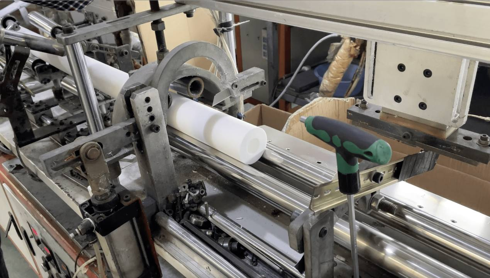
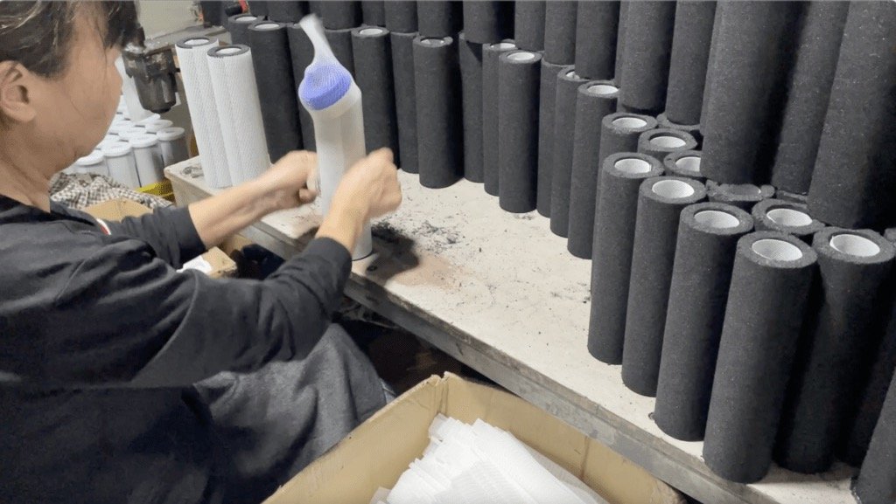
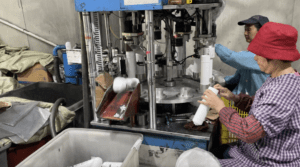
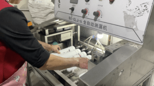
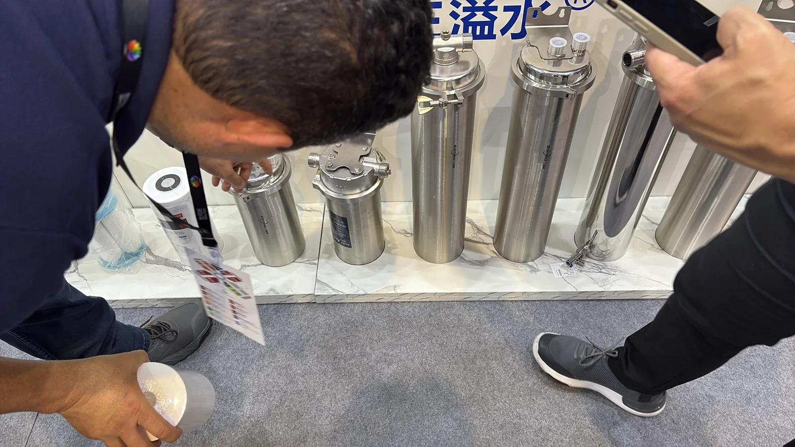
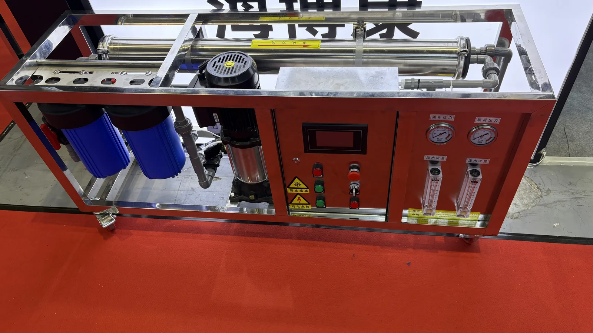
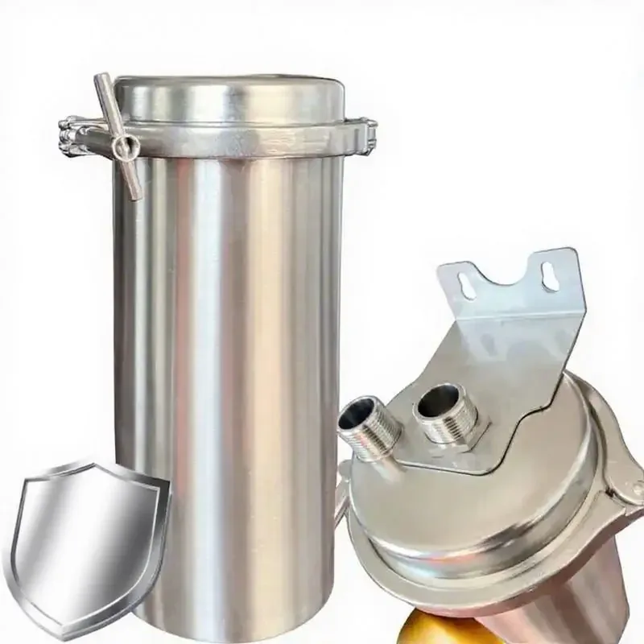

Hỗ trợ sản xuất sản phẩm lọc nước theo hình thức OEM cho các chương trình B2B toàn cầu
Nhà sản xuất bộ lọc nước và nhà cung cấp sản phẩm lọc nước OEM/ODM tại Trung Quốc
Yuchen Water là nhà máy sản xuất bộ lọc nước và nhà cung cấp sản phẩm lọc nước tại Trung Quốc, cung cấp lõi lọc PP thổi nóng chảy, lõi than khối CTO, GAC, T33, UF, máy lọc nước thẩm thấu ngược và các chương trình bộ lọc nước mang nhãn hiệu riêng cho nhà phân phối quốc tế.
Hướng dẫn mua sản phẩm lọc nước OEM dành cho nhà nhập khẩu và nhà phân phối
Chuẩn bị đơn hàng OEM/ODM bằng cách so sánh mục đích sử dụng, dòng bộ lọc, yêu cầu kỹ thuật, bằng chứng từ nhà cung cấp và bao bì xuất khẩu. Hướng dẫn này bao gồm lõi lọc, máy lọc nước RO gia đình và hệ thống RO thương mại hoặc công nghiệp.
Danh mục sản phẩm
Danh mục sản phẩm lọc nước dành cho khách hàng thu mua B2B
Các dòng sản phẩm OEM/ODM chuyên biệt dành cho nhà bán buôn, nhà nhập khẩu, nhà phân phối và thương hiệu thiết bị gia dụng đang xây dựng danh mục sản phẩm lọc mang nhãn hiệu riêng.
Lõi lọc PP thổi nóng chảy
Các chương trình sản xuất tại nhà máy dành cho lõi tiền lọc cặn PP thổi nóng chảy, với cấp độ lọc tính bằng micron, nhãn lõi lọc và thùng carton xuất khẩu tùy chỉnh.
Lõi than khối CTO
Lõi lọc than khối CTO từ gáo dừa dành cho bộ lõi lọc thay thế OEM, sản phẩm mang nhãn hiệu riêng và đơn hàng của nhà phân phối.
Bộ lọc GAC / UDF
Các lựa chọn lõi lọc GAC và UDF cho công đoạn tiền lọc bằng than, hậu lọc bằng than và các dòng lõi lọc thay thế của nhà phân phối.
Lõi lọc T33 lắp trực tiếp trên đường ống
Lõi hậu lọc bằng than nhỏ gọn, lắp trực tiếp trên đường ống, dành cho các chương trình máy lọc nước RO, sản phẩm mang nhãn hiệu riêng và bộ lõi lọc thay thế đóng gói chung.
Màng RO
Phần tử màng RO dành cho nhà nhập khẩu tìm nguồn linh kiện tương thích cho các dòng sản phẩm thẩm thấu ngược.
Màng UF
Lõi lọc UF sợi rỗng dành cho các dự án OEM lọc nước uống ở áp suất thấp và các chương trình của nhà phân phối khu vực.
Máy lọc nước RO & máy cấp nước
Máy lọc nước RO và các nền tảng thiết kế máy cấp nước được sản xuất tại Trung Quốc dành cho đơn hàng OEM/ODM với kiểu treo tường, để bàn và đứng.
Máy lọc nước RO gia đình
Máy lọc nước RO gia đình 5, 6 và 7 cấp lọc được tùy chỉnh, với các tùy chọn đồng hồ áp suất, giá đỡ, tấm lưng, nhãn và bao bì OEM.
Thiết bị khử mặn nước biển RO
Máy lọc nước RO công nghiệp và hệ thống khử mặn nước biển với công suất, bồn tiền xử lý, bơm, van và bao bì xuất khẩu tùy chỉnh.
Vỏ lọc
Vỏ lọc PP, Big Blue và thép không gỉ dành cho nhà nhập khẩu hệ thống lọc dùng lõi, nhà bán buôn và khách hàng thu mua cho dự án.
PP · GAC · CTO · T33 · RO · UF
Danh mục lõi lọc nước
So sánh các dòng lõi lọc, tiêu chí lựa chọn và tùy chọn nhãn hiệu riêng cho các chương trình cung ứng máy lọc nước, máy cấp nước và lõi lọc thay thế.
Danh mục sản phẩm bằng tiếng Anh
Khám phá toàn bộ danh mục sản phẩm Yuchen Water
Xem các hệ thống lọc Yuchen Water, máy cấp nước gia nhiệt tức thì và lõi lọc tại một trung tâm sản phẩm thống nhất.
Năng lực sản xuất OEM/ODM
Nhà cung cấp bộ lọc nước OEM và nhà sản xuất máy lọc nước ODM tại Trung Quốc
Yuchen Water hỗ trợ khách hàng thu mua B2B tìm nguồn sản phẩm lọc nước bán buôn thông qua việc lựa chọn sản phẩm, phối hợp các cấp lọc phù hợp, thiết kế nhãn, thiết kế đồ họa hộp in màu, ký mã hiệu thùng carton, bộ lõi lọc dự phòng và cung cấp mẫu. Các chương trình có thể bao gồm lõi lọc riêng lẻ, dự án máy lọc nước RO, máy cấp nước, vỏ lọc và bộ lõi lọc thay thế đóng gói chung.
Sản phẩm tùy chỉnh: PP, CTO, GAC, T33, UF, màng RO, máy lọc nước RO, máy cấp nước, vỏ lọc và hệ thống lọc nước.
Tùy chỉnh nhận diện thương hiệu: nhãn lõi lọc, in logo, hộp bán lẻ, sách hướng dẫn sử dụng và thùng carton xuất khẩu.
Hỗ trợ khách hàng thu mua: lựa chọn sản phẩm phù hợp, chuẩn bị mẫu, kiểm tra lô hàng và điều phối giao hàng.
Nhà máy & dây chuyền sản xuất
Tổng quan về nhà máy và dây chuyền sản xuất
Sản xuất chuyên biệt cho lõi lọc cặn PP, lõi than khối CTO, lõi lọc GAC, lõi lọc lắp trực tiếp trên đường ống, sản phẩm màng và lắp ráp máy lọc nước RO.

Dây chuyền sản xuất PP thổi nóng chảy
Sản xuất lõi lọc cặn có mật độ biến thiên theo lớp.

Dây chuyền sản xuất lõi than khối
Gia công lõi than khối CTO từ gáo dừa.

Lắp ráp lõi lọc lắp trực tiếp trên đường ống
Lắp ráp lõi lọc T33, lõi lọc khoáng và lõi lọc có đầu nối nhanh.

Kiểm soát chất lượng
Kiểm tra rò rỉ, lưu lượng và bao bì trước khi giao hàng.
Triển lãm ngành nước Thượng Hải
Yuchen Water tại Aquatech China
Khu trưng bày tại Shanghai Water Show giới thiệu các nhóm sản phẩm xuất khẩu chính của Yuchen: máy lọc nước thẩm thấu ngược, thiết bị xử lý nước RO công nghiệp, lõi lọc và vỏ lọc bằng thép không gỉ để khách hàng thu mua so sánh.

Khách hàng kiểm tra vỏ bộ lọc bằng thép không gỉ

Trưng bày máy RO thương mại tại gian hàng
Kiểm soát chất lượng
Hỗ trợ thiết thực về tuân thủ cho nhà nhập khẩu
Đối với nhà phân phối quốc tế, cách diễn đạt về tuân thủ phải chính xác. Chúng tôi tránh tuyên bố rằng mọi SKU đều có cùng một chứng chỉ. Thay vào đó, Yuchen Water có thể cung cấp tài liệu về hệ thống quản lý chất lượng ISO 9001, hồ sơ liên quan đến CE và SGS, tài liệu liên quan đến Halal, cùng một số lựa chọn thử nghiệm hoặc cung ứng theo NSF/ANSI 42, 53 và 58, tùy theo sản phẩm và yêu cầu của đơn hàng.
| Nguyên vật liệu đầu vào | Kiểm tra nhựa PP, than hoạt tính, màng và vật liệu vỏ lọc |
|---|---|
| Kiểm soát chất lượng trong quá trình sản xuất | Kiểm tra kích thước, lưu lượng, độ sụt áp và việc lắp ráp |
| Kiểm tra cuối cùng | Ngoại quan, rò rỉ, nhãn, thùng carton và lấy mẫu ngẫu nhiên |
| Tài liệu | Có thể cung cấp sau khi xác nhận model và rà soát thị trường đích. |
Sản phẩm nổi bật
Sản phẩm lọc nước OEM nổi bật dành cho nhà phân phối

Máy lọc nước RO có bình áp tích hợp 100G/200G
Máy lọc nước RO có bình áp tích hợp 100G/200G — Bình chứa: Bình áp tích hợp.
Gửi yêu cầu
Máy lọc nước RO năm cấp lọc không dùng bơm
Máy lọc nước RO năm cấp lọc không dùng bơm — Thiết bị thẩm thấu ngược năm cấp lọc không dùng điện dành cho các thị trường có áp suất nước đầu vào từ hệ thống cấp nước đô thị ổn định.
Gửi yêu cầu
Máy lọc nước RO thông minh 400G-1200G
Máy lọc nước RO thông minh 400G-1200G — Ứng dụng: Lắp đặt dưới bồn rửa hoặc trên mặt bàn.
Gửi yêu cầu
Máy cấp nước RO bằng thép không gỉ dùng cho mục đích thương mại E900-K27
Máy cấp nước RO bằng thép không gỉ dùng cho mục đích thương mại E900-K27 — Kích thước: 800 x 480 x 1520 mm; Bình chứa nước nóng: 27L.
Gửi yêu cầu
E600-S — Máy cấp nước RO dùng cho mục đích thương mại
E600-S — Máy cấp nước RO dùng cho mục đích thương mại — Có phiên bản có hoặc không có hệ thống thanh toán — Vật liệu vỏ máy: Thép mạ kẽm và kính cường lực.
Gửi yêu cầu
E600-S-Min — Máy cấp nước RO dùng cho mục đích thương mại
E600-S-Min — Máy cấp nước RO dùng cho mục đích thương mại — Lưu lượng nước đã lọc: 0.26 L/min hoặc 1.05 L/min tùy theo cấu hình RO.
Gửi yêu cầu
304 — Vỏ bộ lọc bằng thép không gỉ mác này
Vỏ lọc nước Jumbo bằng thép không gỉ SUS 304 dành cho lõi lọc 10 inch và 20 inch — Đồng hồ áp suất: Đồng hồ áp suất tùy chọn.
Gửi yêu cầu
Nhà sản xuất thiết bị khử muối nước biển bằng RO và máy RO công nghiệp
Nhà sản xuất thiết bị khử muối nước biển bằng RO và máy RO công nghiệp — Vật liệu: Khung thép không gỉ, bồn FRP hoặc thép không gỉ, đường ống PVC, vỏ màng RO và các bộ phận điều khiển công nghiệp.
Gửi yêu cầu
Thiết bị xử lý nước thẩm thấu ngược công nghiệp quy mô lớn 3-100 TPH
Thiết bị xử lý nước thẩm thấu ngược công nghiệp quy mô lớn 3-100 TPH — Lưu lượng nước tinh khiết: 3-100 t/h.
Gửi yêu cầu
Thiết bị RO tích hợp trên khung skid với cụm tiền xử lý hai bồn 1000-3000 L/h
Thiết bị RO tích hợp trên khung skid với cụm tiền xử lý hai bồn 1000-3000 L/h — Lưu lượng nước tinh khiết: 1000-3000 L/h.
Gửi yêu cầuCâu hỏi thường gặp
Các câu hỏi thường gặp của khách hàng B2B
Có. Chúng tôi hỗ trợ nhãn hàng riêng, kích thước lõi lọc, các cấp lọc, hộp in màu, tài liệu hướng dẫn sử dụng, thùng carton xuất khẩu và một số dự án chế tạo khuôn mới được lựa chọn.
Các chương trình cung ứng phổ biến cho nhà phân phối bao gồm lõi lọc cặn PP, lõi than hoạt tính dạng khối CTO, GAC/UDF, lõi lọc lắp trực tiếp trên đường ống T33, màng RO, bộ lọc UF, các dự án máy lọc nước RO, máy cấp nước và vỏ bộ lọc.
Yêu cầu báo giá cho dự án lọc nước OEM/ODM của quý khách
Vui lòng gửi loại sản phẩm, số lượng, thị trường mục tiêu và cảng đến. Kỹ sư kinh doanh sẽ hỗ trợ lựa chọn thông số bộ lọc, bao bì OEM, thông tin chi tiết về thùng carton và chứng từ xuất khẩu phù hợp.